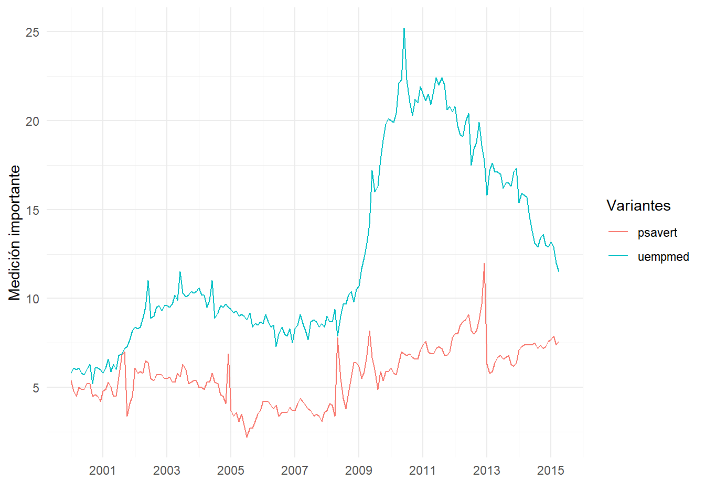

Gráficos estadísticos avanzados con ggplot2 - Módulo 2
9. Visualización de cantidades y proporciones
9.1. Reto gráfico de barras laterales:
9.2. Reto gráfico de barras laterales:

10. Visualización de histogramas
11. Visualización de distribuciones en simultáneo con funciones de densidad
11.1. Con funciones de densidad clásicas

11.2. Con gghighlight para resaltar las densidades
11.2. Con ggridges para mostrarlas en paralelo

12. Visualización variables numéricas con heatmaps

13. Visualización de proporciones con Treemaps

14. Visualización de asociaciones

15. Visualización de series temporales
tibble [1,148 x 3] (S3: tbl_df/tbl/data.frame)
$ fecha : chr [1:1148] "1967-07-01" "1967-08-01" "1967-09-01" "1967-10-01" ...
$ variable: chr [1:1148] "psavert" "psavert" "psavert" "psavert" ...
$ valor : num [1:1148] 12.6 12.6 11.9 12.9 12.8 11.8 11.7 12.3 11.7 12.3 ...[1] "2015-10-19"[1] "2015-10-19"[1] "2015-10-19 10:15:00 -05"
16. Cambiando el tipo de letra de los gráficos
$serif
[1] "TT Times New Roman"
$sans
[1] "TT Arial"
$mono
[1] "TT Courier New"
path file family face version
1 C:/Windows/Fonts AGENCYB.TTF Agency FB Bold Version 1.01
2 C:/Windows/Fonts AGENCYR.TTF Agency FB Regular Version 1.01
3 C:/Windows/Fonts AKHBR.TTF Akhbar MT Regular Version 1.0 - June 1993
4 C:/Windows/Fonts AKHBRBD.TTF Akhbar MT Bold Version 1.0 - June 1993
5 C:/Windows/Fonts ALGER.TTF Algerian Regular Version 1.57
6 C:/Windows/Fonts ANTQUAB.TTF Book Antiqua Bold Version 2.35
ps_name
1 AgencyFB-Bold
2 AgencyFB-Reg
3 AkhbarMT
4 AkhbarMT-Bold
5 Algerian
6 BookAntiqua-Bold[1] "sans" "serif" "mono" "wqy-microhei" "Candara"
[6] "Garamond"